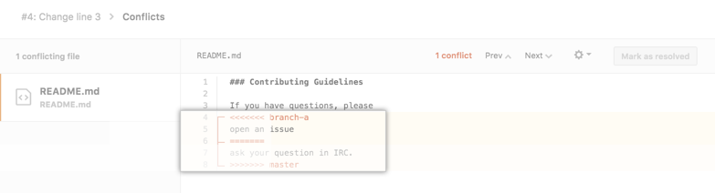
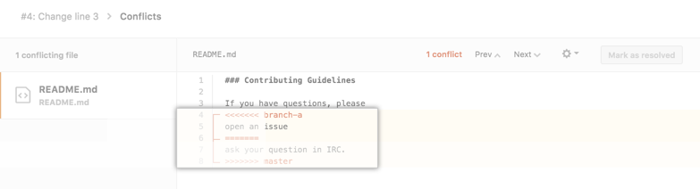

GIT

GIT areas


NOW YOU SEE IT, NOW YOU DON'T
(o deshaciendo con GIT)
La idea detras de GIT es mantener copias "seguras" de un proyecto, para no preocuparnos de romper nuestro código. Con git checkout nos movemos de una copia a otra.
 Checkout es una operación de sólo lectura. No provocará ningún daño,
pero se puede volver a committear una version anterior, y esto afecta al repositorio.
Ademas de hacer checkout a una rama, podemos hacerlo a un commit específico:
Checkout es una operación de sólo lectura. No provocará ningún daño,
pero se puede volver a committear una version anterior, y esto afecta al repositorio.
Ademas de hacer checkout a una rama, podemos hacerlo a un commit específico:
git checkout commity también a una versión anterior de un archivo solo
git checkout commit file.phpo la versión sin modificar de un archivo
$ git checkout -- file.pyREVERTIR UN COMMIT
$ git revert 1776f5
Revert crea un nuevo commit que deshace cambios de un commit previo
Es importante saber que revert revierte UN solo commit. No a un estado anterior del proyecto quitando todos los commits desde entonces. En GIT, este proceso se conoce como reset.

Revert es más seguro, ya que no borra información, sino que genera un nuevo commit deshaciendo el anterior.
Reset por el contrario, tiene el potencial de perder información. Debe usarse localmente porque cambia la historia de git
(kinda sorta)
Reset
 Los tres componentes de un repositorio GIT
Los tres componentes de un repositorio GIT
Reset en nivel "commit"
$ git reset HEAD~2Vuelve 2 commits hacia atras. Esos dos commits, ahora estan sin referencia y serán borrados por GIT en la proxima recoleccion de basura.
Reset tambien puede modificar el area de staging y el directorio de trabajo, usando estas opciones:
--soft – Staging y el directorio de trabajo no se alteran.
--mixed – (default) Staging se actualiza al commit especificado, pero el directorio de trabajo no se afecta.
--hard – Staging y el directorio de trabajo se modifican al commit especificado.

usos más comunes:
$ git reset --mixed HEADAfecta al area de staging, pero mantiene los cambios en el directorio de trabajo
$ git reset --hard HEADBorra todos lo cambios, de staging y el directorio de trabajo
Caveat emptor: usar con cuidado cuando se trabaja en ramas publicas.Reset, revert y checkout
| Comando | Alcance | Uso más comun |
|---|---|---|
git reset | Commit-level | Descarta commits en una rama privada o borra cambios sin comitear |
git reset | File-level | Quita un archivo de staging |
git checkout | Commit-level | Cambia de rama o inspecciona commits |
git checkout | File-level | Descarta cambios en el directorio de trabajo |
git revert | Commit-level | Deshace commits en una rama pública |
git revert | File-level | No tiene aplicación |
rewriting history
$ git commit --amend$ git rebase

Rebase interactivo
$ git rebase -i base Nos da la oportunidad de limpiar y ordenar la historia.
Permite quitar, dividir y alterar commits existentes.
It’s like git commit --amend on steroids.
The Golden Rule of Rebasing
NUNCA usar en ramas públicas

Fast Forwarding
git merge --no-ffOcurre cuando se hace git pull sin tener ningun cambio local.
Git simplifica las cosas avanzando el puntero, ya que no hay ningún otro trabajo divergente a fusionar.
Con --no-ff se genera un commit adicional enfatizando el merge

cherry pick
Genera un nuevo commit con commits elegidos de otra rama
Paso 1.
git checkout rama-a-la-que-queremos-agregar-commitsPaso 2.
git cherry-pick c90fd66Formateando y Filtrando git log
commit 3f1c1a58f9fb660a1446eea99528543e35fde1de
Author: kilinkis
Date: Fri Feb 10 17:26:24 2017 -0300
Fix margin iOS and Android landing pages
commit 50127ce2ec77b1013773d6f074a6e95c509115ce
Author: kilinkis
Date: Fri Feb 10 17:14:27 2017 -0300
Fix: Drupal landing page margin
commit bef189d53c0e83c4b9e1d855411d0ad974159ab3
Author: kilinkis
Date: Fri Feb 10 16:53:18 2017 -0300
Fix margin in landing page for Internal Solutions
git log --oneline
3f1c1a5 Fix margin iOS and Android landing pages
50127ce Fix: Drupal landing page margin
bef189d Fix margin in landing page for Internal Solutions
96ab0fa Plugin added: Redirect unattached images
734ce00 Merge remote-tracking branch 'origin/fs-19' into fs-19
dceba5f Fix: landing page Internal Solutions
68dec55 Merge branch 'develop' into fs-19
git shortlog
Juan Incaurgarat (33):
Initial work on custom landing page posts with Advanced Custom Fields
Merge branch 'custom-landing-page-posts' into feature-sprint-4
Merge pull request #5 from mobomo/custom-landing-page-posts
Hotfix for custom landing page template
Merge pull request #6 from mobomo/case-nalc
git log --graph
| * | commit cbc02e2bf96971fc359569f089f525d734fcac94
| | |\ \ Merge: 6c950ef c45068d
| | | |/ Author: Juan Manuel Incaurgarat
| | | | Date: Fri Dec 23 17:12:25 2016 -0300
| | | |
| | | | Merge pull request #62 from kilinkis/feature-sprint-14
| | | |
| | | | Feature sprint 14
| | | |
| | | * commit c45068dd87baf37fd28622efbc952d94bb86679e
| | | | Author: kilinkis
| | | | Date: Fri Dec 23 13:50:29 2016 -0300
| | | |
| | | | Fix cropped form in small devices
| | | |
| | | | https://intridea.atlassian.net/browse/KILINKIS-363
| | | |
| | * | commit 6c950ef2a5b53f17293abc54b50585ae381bfa83
| | |\ \ Merge: ca6b550 b5cf649
git log --pretty=format:"%cn commited %h on %cd"
kilinkis commited 3f1c1a5 on Fri Feb 10 17:26:24 2017 -0300
kilinkis commited 50127ce on Fri Feb 10 17:14:27 2017 -0300
kilinkis commited bef189d on Fri Feb 10 16:53:18 2017 -0300
kilinkis commited 96ab0fa on Fri Feb 10 14:01:03 2017 -0300git log --after="2016-12-30" --before="yesterday"Limpiando el .gitignore
Ignorar archivos que ya fueron commiteados al repo
Paso 1. Aplicar al .gitignore los patrones de los archivos que queremos ignorar.
Paso 2. Commitear (o stash) cualquier cambio local.
Paso 3:
// git rm --cached /path/to.file
$ git rm -r --cached .
$ git add .
$ git commit -m "Clean up ignored files"Quitar archivos de un commit
git reset --soft HEAD^ // o git reset --soft HEAD~1Resetear el archivo no deseado para dejarlo fuera del commit:
git reset HEAD path/to/unwanted_fileCommitear (incluso se puede usar el mismo mensaje):
git commit -c ORIG_HEADResolver conflictos online
 

git en nuestro propio servidor
Paso 1. Instalar GIT en ambas máquinas:
sudo apt-get install git-corePaso 2. Agregar user y generar llaves SSH
(privada y pública).
sudo useradd git
passwd git
ssh-keygen -t rsaPaso 3. Copiamos las claves al server
cat ~/.ssh/id_rsa.pub | ssh git@remote-server "mkdir -p ~/.ssh && cat >> ~/.ssh/authorized_keys"Paso 4. En la maquina remota (ssh) y crear un directorio para el proyecto de git
git@server:~ $ mkdir -p /home/username/project-1.git && cd "$_"Paso 5. Iniciar el repo
git@server:~ $ git init --bare
//Initialized empty Git repository in /home/username/project-1.gitPaso 6. Creamos el proyecto localmente
mkdir -p /home/username/git/project && cd "$_"
git init
//Initialized empty Git repository in /home/username/git/projectPaso 7. Crear y agregar un archivo
touch file.php
git add .Paso 8. Commitear
git commit -m "message" -a
[master e517b10] message
1 file changed, 1 insertion(+)Paso 9. Agregamos el origen remoto
git remote add origin ssh://git@remote-server/repo->path-on-server..git Paso 10. Ahora ya podemos pushear (y pullear) nuestros cambios.
git push origin masterOtros colaboradores pueden clonar el proyecto
git clone git@remote-server:/home/username/project.gitConclusiones:
GIT es una herramienta muy versatil que permite trabajar de forma distruibuida en la que cada desarrollador tiene una copia del proyecto. Se puede llegar al mismo resultado de distintas maneras. No tiene un unico modo de uso.
Distintos equipos lo usan de distintas formas, pero es solamente "how it's done here". El GIT workflow esta abierto a mejoras, modificaciones y colaboraciones.
Preguntas?

Fuentes, lecturas y ejercitación
Thank you!